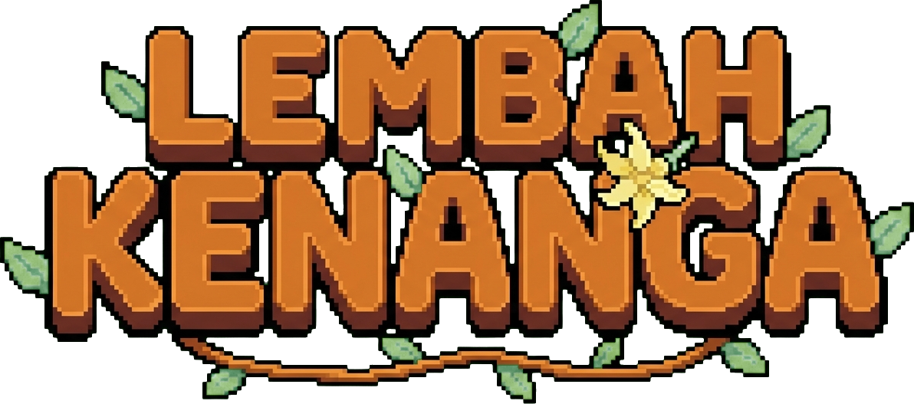
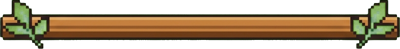
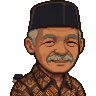
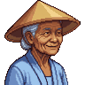

Mulai Petualangan

Kontrol
Ritme Hari
Hari dimulai pukul 06:00. Setiap aksi dengan alat memakai energi; makan memulihkannya. Berdiri di depan pintu rumah lalu tekan E untuk tidur sebelum pukul 02:00 — kalau lewat, kamu pingsan dan bangun dengan energi separuh. Tidur juga menyimpan permainanmu.
Papan pengumuman di desa memberi tanggal, cuaca hari ini, dan ramalan besok.
Tidak ada layar pemuatan: semua tempat berada di satu peta, dan setiap bangunan dilayani langsung di depan pintunya.
Satu musim = 28 hari. Ada empat musim: Semi, Panas, Gugur, Dingin. Tanaman hanya tumbuh di musimnya; saat musim berganti, tanaman yang tidak cocok akan layu.
Bertani
Cangkul tanah → tanam benih → siram setiap hari → panen. Mencangkul dan menanam hanya bisa di dalam petak kebun berpagar. Isi ulang penyiram di sumur. Hasil panen dimasukkan ke kotak jual di dekat rumah dan dibayar keesokan paginya. Hujan menyiram semua tanaman untukmu.
Setiap tanaman hanya tumbuh di musimnya. Saat musim berganti, tanaman yang tidak cocok akan layu — jadi perhatikan kalender.
Kapak menebang pohon dan batang kayu (kayu), beliung memecah batu (batu), sabit membersihkan rumput liar (serat). Semak berbuah bisa dipetik jadi beri.
Beri makan ayam dan sapi di kandang; keesokan harinya mereka menghasilkan telur dan susu yang bisa kamu ambil.
Belanja & Alat
Berdiri di depan pintu toko dan tekan E — menunya langsung terbuka, tanpa perlu masuk ke dalam.
Toko Bu Sari (buka 09:00–17:00) menjual benih sesuai musim, pakan ternak, dan umpan. Kamu juga bisa menjual barang di sana lewat tab JUAL.
Pandai Besi (buka 09:00–16:00) meningkatkan alatmu. Tingkat Tembaga butuh G500 + 5 batu dan menghemat 1 energi setiap ayunan; Besi butuh G2.000 + 5 bijih tembaga. Tekan Tab di layar pandai besi untuk memilih alat yang ingin ditingkatkan.
Warung Kopi dan Balai Desa menyusul.
Tempat yang Bisa Dikunjungi
Seluruh lembah adalah satu peta — tidak ada layar pemuatan saat berpindah tempat.
Ladang (utara-barat) — rumahmu, petak kebun berpagar, kandang ayam dan lumbung sapi, sumur, dan kotak jual.
Pusat Desa (timur) — plaza batu dengan air mancur, Balai Desa berjam, toko Bu Sari, warung kopi, pandai besi, dan papan pengumuman.
Hutan (barat daya) — pepohonan rapat, kolam berlili, dan pondok bunga Rani. Sumber kayu, batu, beri, jamur, dan bunga liar.
Distrik Selatan — klinik Dokter Ratna dan tiga rumah warga yang menghadap satu jalan.
Pantai (selatan) — pasir, pohon kelapa, kerang dan rumput laut untuk dipungut, pondok Nenek Wulan, serta dermaga kayu yang bisa kamu susuri sampai ke ujung.
Satu jalur utama turun dari jalan besar desa sampai ke dermaga, dan dua papan penunjuk berdiri di percabangannya — jadi kamu tidak perlu menebak arah.
Rumah — tekan E di depan pintu untuk tidur.
Memancing — sapa Nenek Wulan di pondok tepi pantai, dia akan memberimu pancingnya yang lama (kalau keburu penasaran, Bu Sari juga menjualnya G350). Lalu berdiri menghadap air dan tekan E. Tunggu pelampungnya tersentak, tekan E lagi untuk mengait, lalu tahan E untuk menjaga batang hijau tetap menutupi ikannya. Kolam hutan dan laut punya ikan yang berbeda, dan sebagian hanya muncul malam hari atau di musim tertentu. Lemparkan di dekat bayangan ikan yang lewat: sambarannya lebih cepat dan tangkapannya lebih bagus.
Warga Desa
Sapa warga sekali sehari untuk menambah hati sedikit demi sedikit. Pegang barang lalu tekan G di depan mereka untuk memberi hadiah — satu hadiah per orang per hari, dan barang kesukaannya bernilai jauh lebih besar. Setelah empat hati, mereka mulai bercerita hal yang tidak mereka ceritakan ke sembarang orang.
Warga punya jadwal harian. Bu Sari menjaga toko sampai sore lalu ke plaza, Bang Jaka dan Bayu mampir ke warung selepas kerja, Nenek Wulan turun ke dermaga saat pagi. Desa ini terlihat berbeda tergantung jam berapa kamu datang.
Warga Lembah Kenanga

Arya
Bertopi jerami dan berbaju kodok biru. Mewarisi ladang kakek dan pindah dari kota.

Laras
Bertopi jerami dan berbaju kodok abu. Mewarisi ladang kakek dan pindah dari kota.
Damar
Berkacamata bulat dan berkemeja hijau, lengan tergulung. Mewarisi ladang kakek dan pindah dari kota.

Nadia
Berkerudung krem dan bertunik marun. Mewarisi ladang kakek dan pindah dari kota.

Pak Lurah Harun
Bijak dan hangat. Memberimu tugas pertama. Suka: kopi, labu.
Bu Sari
Menjual benih dan membeli hasil panen. Suka: stroberi, bunga.

Bang Jaka
Menempa di bengkelnya sepanjang hari dan meningkatkan alatmu. Suka: bijih, kopi.
Kang Dadang
Menjaga warung kopi di ujung timur jalan besar. Suka: telur, cabai.

Dokter Ratna
Merawat warga di klinik distrik selatan. Suka: jamu, bunga liar.

Nenek Wulan
Lima puluh tahun memancing di teluk ini. Tinggal di pondok tepi pantai. Suka: kerang, rumput laut.

Rani
Tinggal di pondok tepi hutan, dekat kolam. Suka: bunga liar, madu.

Bayu
Hampir selalu berdiri di ujung dermaga. Murid Nenek Wulan. Suka: ikan kakap, kopi.
Tentang Game
Lembah Kenanga adalah game simulasi kehidupan desa berbasis web, terinspirasi Harvest Moon dan Stardew Valley, dengan nuansa desa Indonesia: balai desa, warung kopi, batik, dan warga yang ramah.
Game ini berjalan sepenuhnya di browser (HTML5 Canvas, tanpa plugin) dan menyimpan progres di perangkatmu.
Catatan Teknis
Engine: JavaScript murni + Canvas 2D, tile 32 px, proyeksi oblique top-down. Aset gambar dibuat dengan bantuan AI (Higgsfield, Nano Banana Pro) lalu dinormalisasi manual dengan Python: chroma-key, slicing frame, kuantisasi palet, dan uji seam.
Versi: 0.7 — satu lembah utuh tanpa layar pemuatan; bertani penuh, ternak, cuaca, belanja & upgrade alat, umpan balik aksi, musik latar, dan menu jeda dengan pengaturan.